ONLINE GYAKORLÓPROGRAM 45+ FÉRFIAKNAK
Nem kell hinned a Tantrában, csak próbáld ki, mit csinál a testeddel!
12 hét. 12 gyakorlat. Egy új szint a szexualitásodban.
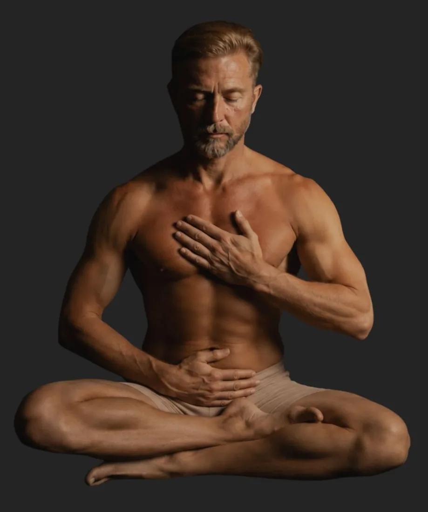
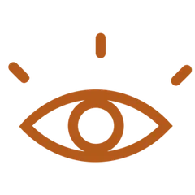
A test jelzéseinek érzékelése és a jelenlét gyakorlása.
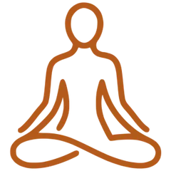
Nem siettetve, hanem érzékelve, mi történik.
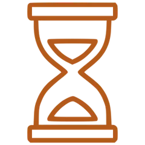
Visszanézhető anyagokkal, lépésről lépésre.
Vannak képességeid, melyek csodálatos, és teljesen magabiztos szeretővé tesznek, aki soha nem okoz csalódást sem fizikailag, sem érzelmileg a partnerének (és magának sem!).
Ezeket a képességeket épp úgy edzeni kell, mint az izmaidat.
Soha nem lesz több kellemetlen szeretkezésed, vagy borzalmas randid! Soha nem kell félned, hogy cserbenhagy a tested!
És ahogy múlnak az évek, nem csak szexuális potenciálod őrzöd meg, de irigylésre méltóan erős és egészséges, kiegyensúlyozott férfi maradsz.
felfedezted a szexet.
felfedezted a női testet
felett fedezd fel a saját tested még kiaknázatlan lehetőségeit!
És válj ezáltal a szeretkezés mesterévé!
Talán egy hosszú kapcsolat után újra egyedül vagy.
Talán már megjelent valaki, akivel most másképp szeretnéd.
Talán egyszerűen azt érzed, hogy a következő húsz éved szexualitását nem ugyanúgy akarod megélni, mint az előző húszat.
Nem több teljesítményt szeretnél, hanem több nyugalmat, több élvezetet.
És sokkal kevesebb megfelelést.
A nyugati ember szeret célokat kitűzni. Elindulunk valahonnan, és igyekszünk minél gyorsabban megérkezni.
Izgalom. Erekció. Egyre nagyobb izgalom. Orgazmus.
Sikerült…. Vagy nem sikerült….
És minél fontosabbá válik a cél, annál könnyebben történik valami furcsa:
elfelejtjük érezni azt, ami közben történik.
A figyelem lassan kiköltözik a testből, és beköltözik a fejbe.
A tantra ennek szinte az ellenkezőjét tanítja.
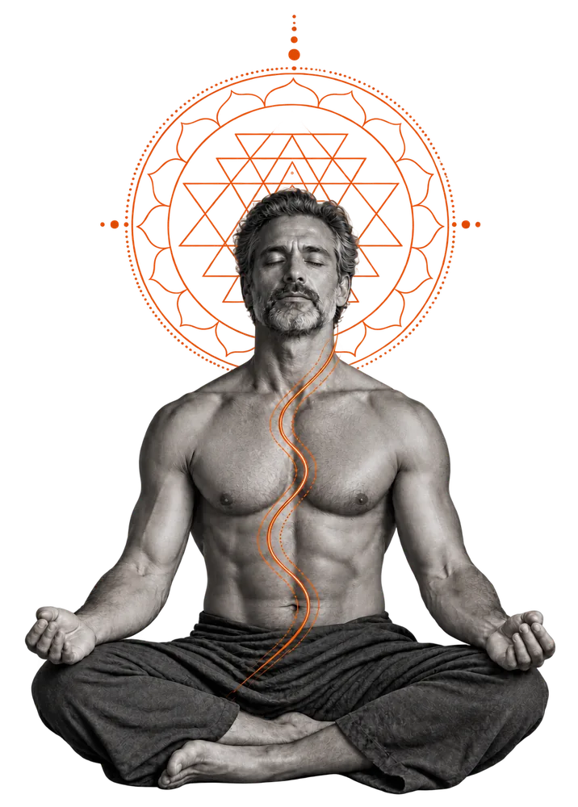
Azzal a képességgel, hogy észrevedd, mi történik a testedben.
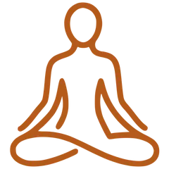
Megtanulod felépíteni, megtartani és szabályozni a szexuális izgalmat.
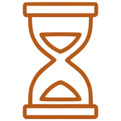
És közben ott maradni, a testedben, a másik emberrel, a pillanatban.
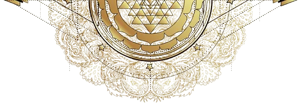
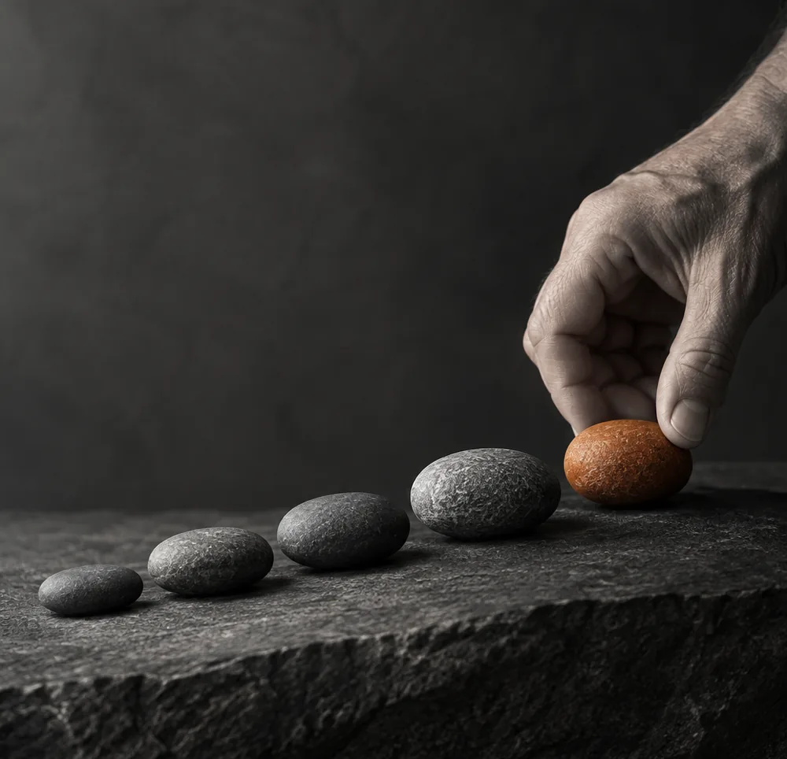
Egy 12 hetes online gyakorlóprogram 45+ férfiaknak.
12 gyakorlat. 12 hét.
Minden héten kapsz egy új gyakorlatot, amely az előzőre épül.
Ahogy egy sportedzésben sem attól leszel erősebb, hogy elolvasod a gyakorlatokat, itt sem az információ mennyisége számít.
Hanem az, amit a tested megtanul.
A cél az, hogy a 12 hét végére a tantraszex-technika ne valami legyen, amit tudsz.
Hanem valami, amire képes vagy.
“Ahol a figyelem, ott az energia” tanítja a Tantra.
Megtanulsz hosszan benne maradni egy érintésben, egy érzésben, egy orgazmus-hullámvasútban. Megtanulod a figyelmeddel irányítani a testedben a szexuális energiát, és pusztán a figyelmeddel fokozni vagy csökkenteni azt.
A légzés az egyik legegyszerűbb eszköz, amit mindig magaddal viszel.
És mégis kevesen használják tudatosan a szexualitásban.
Megtanulod azokat az alapvető légzéstechnikákat, amelyek segítségével változtatni tudsz a testi állapotodon, mélyítheted a gyönyörérzeteket és jobban érzékelheted, illetve irányíthatod a benned megjelenő szexuális energiát.
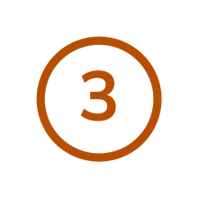
Te is úgy érintesz, hogy közben már azon jár az eszed, hogy hová akarsz eljutni?
A tudatos érintésben nincs agyalás.
Megtanulod érzékelni az érintést adó kézben és az érintett testben történő változásokat, és úgy érinteni, ahogy ott és akkor a legtökéletesebb.
Figyelni.
Nem azért érinteni, hogy történjen valami. Hanem azért, hogy érezd, ami történik.
És ettől az érintés minősége egészen más lesz.
A legtöbb férfi két állapotot ismer igazán jól: nincs izgalom – és sok izgalom.
Pedig a kettő között rengeteg fokozat van.
A tantraszex edzések során megtanulod felismerni az izgalmi állapotod különböző szintjeit, és egyre tudatosabban bánni velük.
Mikor gyorsul fel túlságosan?
Mitől csillapodik?
Hogyan tudsz benne maradni egy kellemesen magas izgalmi állapotban anélkül, hogy rögtön a végpont felé rohannál?
Nem elnyomni tanulod az izgalmat. Hanem elbírni egyre többet az élvezetből.
Az ejakuláció feletti nagyobb kontroll nem pusztán azt jelenti, hogy „tovább bírod”.
Ez túl kevés lenne.
A cél az, hogy egyre korábban felismerd a tested jelzéseit, és megtanulj tudatosabban bánni az izgalmi állapotoddal.
Nem harcolni a testeddel. Nem görcsösen visszatartani valamit.
Hanem együttműködni vele, és élvezni az izgalmi energia áramlását, hullámzását
Megtapasztalod, hogy a magmegtartás nem önmegtartóztatás. Hanem egy képesség, mely újabb és újabb kapukat nyit meg a hihetetlen szexuális élmények felé.
Két lehetőség van. Hagyod, hogy a farkad irányítson téged, vagy te irányítod a farkad, és megtanulod kezelni a szexuális energiád. Vagy éppen azt a helyzetet, amikor nem jelenik meg az izgalmi energia.
Ha fogalmad sincs, hol tart a partnered,
Mindhárom óriási hiba, és tönkrevágja a szeretkezést, sokszor nem csak egy alkalomra, hanem örökre
Az edzésprogramban megtanulod érzékelni a szexuális energiát nem csak magadban, de a partneredben is. Tudod hol jársz, és tudod hol jár a partnered a gyönyör útján.
Nem lesz soha többé kétséged, hogy egy randi vagy szeretkezés jól sikerül-e.
Elegendő elméleti tudásod és gyakorlati tapasztalatod lesz ahhoz, hogy minden szeretkezést művészként megalkoss.
Megtanulod tökéletesen érzékelni magadat és a másikat, így biztosan fogod tudni mi az, ami fokozza a gyönyört, mi az, ami kevésbé, és mi az, ami egyáltalán nem jó az adott pillanatban.
Minden nő teste máshogy működik. Ha abból indulsz ki, mi működött a korábbi kapcsolataidban, könnyen zsákutcába kerülsz.
Ebben az edzésprogramban megtanulsz egy szemléletváltást, ennek köszönhetően csodálatos kísérőjévé válsz bármely nőnek, valamennyi partnerednek abban, hogy életük legszebb szexuális élményeit tapasztalják meg.
A tantraszex edzés során elsajátított képességeid lehetővé teszik, hogy felfedezz olyan dolgokat a szexben, amelyekről korábban álmodni sem mertél
A kielégítő, energiamegtartó szex egy egészen új életminőséget is hoz számodra:
Tudatosabb lesz az életed, tudatosabb lesz a teremtésed.
Gazdálkodni tudsz az élet-energiáddal, megtapasztalod, hogy az elgyengülés, betegség és potencia-, vagy libidó zavar egyáltalán nem szükségszerű velejárója az évek múlásának
Neked szól, ha 45 feletti férfiként:
Akkor is neked szólhat, ha nincs különösebb „problémád”. Egyszerűen érzed, hogy ennél több van a szexben, és kíváncsi vagy arra, mire képes a tested, ha megtanulsz valóban figyelni rá.
Ez a program viszont nem egy évtizedek óta ellaposodott kapcsolat „megjavítására” készült.
És nem gyors szexuális trükköket tanít.
Annak szól, aki hajlandó rendszeresen gyakorolni.
“Mikor találkoztam a Tantraszex edzéssel, éreztem, - még ha nem is volt rá tapasztalatom- hogy van realitása annak, hogy sokkal jobb lehet, ha "nem pukkad ki a lufi".
De arra, amit most magmegtartóként megélek a szexben, legvadabb szexuális álmomban sem gondoltam volna…”
“Eleinte egy kicsit sajnáltam az időt a gyakorlásra, mert mindig rengeteg dolgom volt, a gimnázium óta időhiányban szenvedtem.
Durva, hogy a Tantraszex Edzés nem csak a szexualitásomat forradalmasította, de sokkal összeszedettebbé, energikusabbá tett a munkában, a hétköznapokban is. Egyszer csak azt vettem észre, hogy valahogy több időm van. A 12 . héten több, mint két óra elteltével is csak azért hagytam abba a gyakorlást, mert másnap munka volt és pihenni is kellett. “
“Volt, hogy a tudatos és irányított légzés óvott meg attól, hogy "átessek". Jó volt azokat az új érzeteket megtapasztalni. Előfordult, hogy sikerült a formálódó "energiacsomagot" szétoszlatni az egész medencémben.
De nem ért itt véget az élmény!
Két óra alvás után, éjjel felébredtem és a "határ" alatti érzet még mindig megvolt. Ráadásul olyan intenzíven, hogy folytatnom kellett a "gyakorlást". Folyamatosan feszegettem a határokat, közben tanulva a testem jelzéseit, egyre jobban, sokszor és sűrűbben megtapasztalva a "robbanás előtti kegyelmi pillanatot".
“Egyszerre volt hihetetlen, de ugyanakkor valós, természetes és transzcendentális. Megdöbbentően "Uramisten!" érzés. Hogy tényleg van ilyen? Ekkora és ennyire elnyújtható élvezet? Pedig még csak a tanulás elején vagyok!
És milyen érzés lesz majd másnak is megadni mindezt!?”
Az edzésterv mellé most ajándékba adjuk neked a következő bónusz anyagokat, amelyek értéke 39.000 Ft
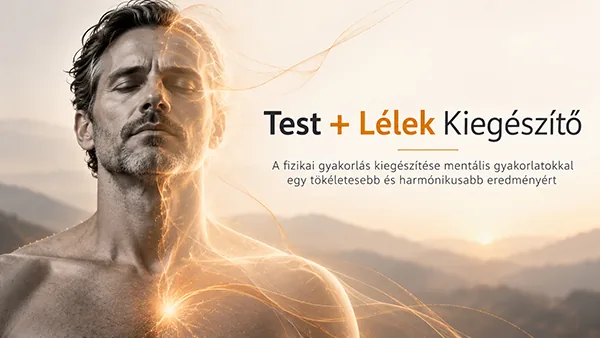
A fizikai gyakorlás kiegészítése mentális gyakorlatokkal egy tökéletesebb és harmónikusabb eredményért
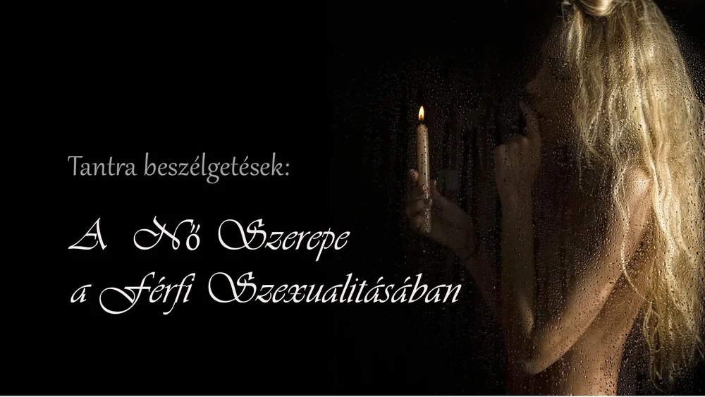
Kerekasztal beszélgetés a tantrikus szexről és ebben a női partner szerepéről, két tantra oktató és egy szex coach részvételével
Havi 1 alkalommal online beszélgetés a tapasztalatokról, és válasz a kérdésekre tantra oktatók vezetésével
24 órád van eldönteni, akarsz-e másodikat!
Van, amikor már az első találkozásnál érzed: ebből nem lesz szerelem.
A kurzussal sem kell összekötnöd az életedet csak azért, mert egyszer igent mondtál rá.
Vásárlás után nézz bele a Tantraszex Edzéstervbe, ismerkedj meg a felépítésével és kezdd el az első gyakorlatot!
Ha elsőre úgy érzed, hogy „Köszönöm, ez nem az én világom”, jelezd nekem 24 órán belül és visszakapod a kurzus árát.
Nincs sértődés. Nincs kínos magyarázkodás.
Nem minden első randiból lesz 12 hetes kapcsolat.
Ha végigcsináltad az edzést, de semmi hatást nem érzel, visszakapod a pénzed!
A Tantraszex Edzésterv nem attól működik, hogy ott van a gépeden.
Gyakorolni kell.
Végezd el a 12 hét 12 gyakorlatát az útmutatás szerint. Ha mindezt becsülettel végigcsináltad, és 12 hét után azt mondod:
„Megcsináltam. De nem érzek érdemi változást.”
akkor visszaadom a kurzus árát, a vásárlás napjától számított 13. héten
(nem előbb és nem később)
Ha te beleteszed a 12 hetet, én vállalom a garanciát.
A kérdés csak az, hogy közben változik-e valami.
Továbbra is ugyanúgy használhatod a testedet, ahogy az elmúlt húsz-harminc évben.
Vagy adhatsz neki 12 hetet, hogy megtanuljon valami újat.
Nem kell sietned.
De a halogatás is egy döntés.
Részletesebb információért a prémium csomagról
1.Mi történik, miután kitöltöttem a megrendelőlapot?
Ez az oldalad normál szöveg kinézete. Az egész oldal 80%-a ebben íródik és csak a kiemelések és a figyelem felkeltő tartalmak lesznek máshogy formázva. Ide jól és könnyen olvasható betűtípus kell.
2.Kapok számlát?
Természetesen
3.Mit tud nekem újat mondani a szexről ennyi idős koromban?
Nem azt tanulod újra, amit már harminc éve csinálsz. Olyan képességeket edzünk, amelyeket valószínűleg soha senki nem tanított meg neked.
4.Akkor is működik, ha nem vagyok “spiri”?
Nem hinni kell benne. Csinálni kell.
5.Egyedül hogyan gyakoroljak szexet?
Nem kell megvárnod a következő kapcsolatodat ahhoz, hogy más férfiként érkezz bele.
6.„Mi van, ha elkezdem, aztán nem csinálom?”
Nem kell megtanulnod a tantrát. Ezen a héten csak ezt az egy gyakorlatot kell elvégezned.
A fiók megmarad, hónapok múlva újra előveheted.